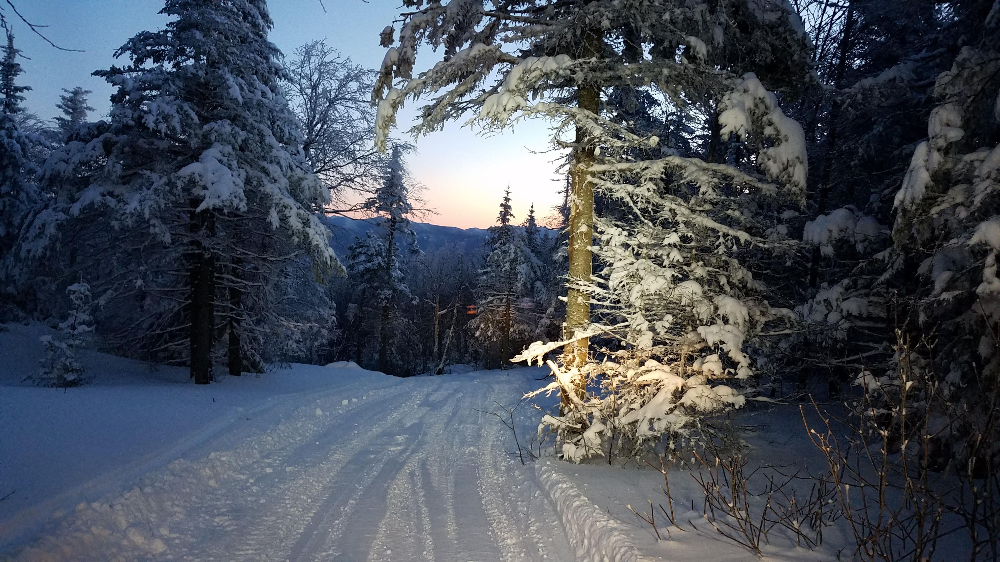

Trail Conditions
Using trails when they are muddy is the leading cause of trail damage.
Here are the Top 5 reasons that you should not use muddy trails:
-
When trails are muddy, users invariably travel along the adjacent
vegetation to avoid the mud. This tramples and kills trail side
vegetation and widens our trails - and thus we lose the single track
character of our trail system.
-
As trails widen, erosion increases and the trails become increasingly
difficult to maintain sustainability. Trail crews cannot adequately
repair this type of damage in the Foothills.
-
Drainage structures put in by trail crews to divert water and curtail
erosion are trampled and flattened - making them ineffective and again
increasing erosion along our trail system. No one likes to travel
along deeply eroded trails - so they travel to the side and create
additional, parallel routes. This again leads to loss of vegetation
and eventual increased erosion.
-
Those deep foot prints, hoof prints, tire tracks and yes - even paw
prints invariably freeze and become ankle twisting, teeth chattering
experiences for those trail users trying to do the right thing -
travel on trails when they are frozen (or dry).
-
We are trying to maintain and manage the Ridge to Rivers trail system
not only for ours, but for future generations. Continued irresponsible
use of our trails will ensure one thing - that our children will not
be able to enjoy the experiences that we currently have.

Please help up preserve the integrity of the trail system by doing the
following:
-
Stay off of muddy trails. Pay attention - if you are leaving tracks,
turn back.
-
In winter, ride or hike early in the morning when trails are frozen
hard.
-
Check daily trail conditions on our website or on Facebook to know
whether you should be on the trails during winter months.
-
If you encounter short stretches of mud, ride or walk through them.
Don’t leave the trail as this kills trailside vegetation and leads to
trail widening.